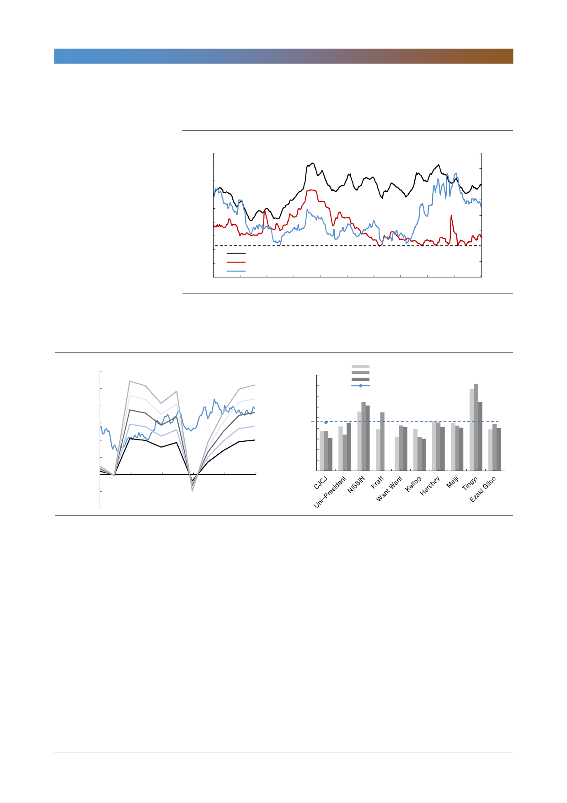

CJ제일제당(097950)
[그림 3] 중국 돼지고기, 라이신 spot 가격 동향
(달러/kg)
4.5
(비율)
16
4.0
14
3.5
12
3.0
10
2.5
8
2.0
1.5
6
1.0
돼지고기 도매가격
4
0.5
라이신가격
2
조정 pork/corn ratio(우축)
0.0
0
Jan-08 Jan-09 Jan-10 Jan-11 Jan-12 Jan-13 Jan-14 Jan-15 Jan-16 Jan-17 Jan-18
자료: Bloomberg, Wind, 한국투자증권
[그림 4] 수정 PER 밴드
(원)
600,000
500,000
400,000
300,000
200,000
100,000
0
2008
(100,000)
2010
(200,000)
자료: Quantiwise, 한국투자증권
2012
2014
2016
26X
22X
18X
14X
10X
2018
[그림 5] Global peer와의 PER 비교
(X)
45
40
35
30
25
20
15
10
5
0
2016 PER
2017F PER
2018F PER
2017F CJ제일제당 제외 평균
주: CJ제일제당 PER은 일회성 손익 제외한 수정 EPS 기준
자료: Bloomberg, 한국투자증권
기업개요 및 용어해설
CJ제일제당은 식품소재 및 가공식품, 생명공학 관련 제품을 제조하는 종합 식품 기업이다. 1953년 제일제당공업주식회
사로 출범한 이후, 2007년에 CJ 주식회사에서 기업 분할되어 식품과 생명공학에 집중하는 사업회사로 분사되었다. 주요
사업으로는 설탕, 밀가루, 조미료, 가공식품 등을 생산ㆍ판매하는 식품사업, 동물사료, 의약품, 아미노산 등을 생산ㆍ판
매하는 생명공학사업, 국내/국제물류 및 택배, 건설사업 등을 영위하는 물류사업이 있다. 2015년 기준 식품, 생명공학,
물류 사업부문의 매출액 비율은 각각 32%, 31%, 37%이다. (부분간 내부 매출액 제외, 연결 기준)
4